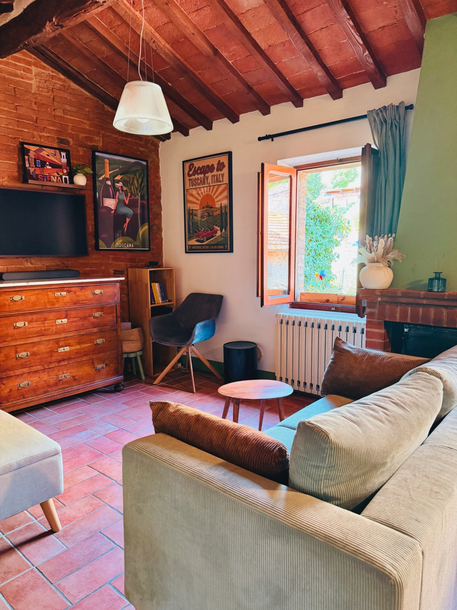
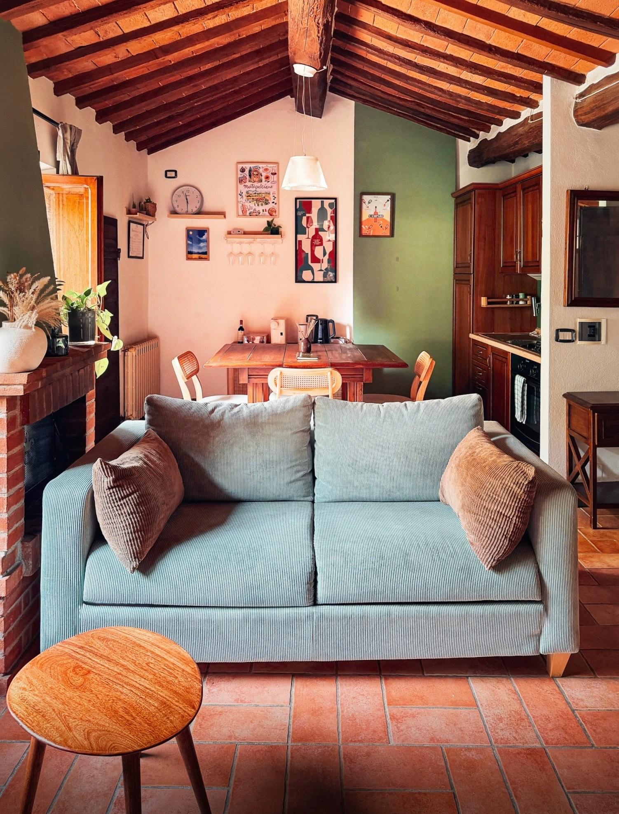

Dove dormire per visitare la Val d'Orcia: Montepulciano come base.
Dormire nel centro storico di Montepulciano permette di alternare giornate a piedi nel borgo a escursioni in auto tra Pienza, Monticchiello, Bagno Vignoni e San Quirico d'Orcia.
 Le colline tra Montepulciano e Pienza · foto Unsplash
Le colline tra Montepulciano e Pienza · foto UnsplashPerché partire da Montepulciano.
La sera puoi vivere Montepulciano a piedi; durante il giorno puoi usare l'auto per raggiungere borghi, strade panoramiche e terme della Val d'Orcia.
Pienza e Monticchiello sono tra le escursioni più immediate, mentre Bagno Vignoni e San Quirico d'Orcia si prestano bene a una giornata più ampia nella valle.
Il Nido di Sofì offre una soluzione per due nel centro storico di Montepulciano, con cucina attrezzata e Wi‑Fi veloce.
La Val d'Orcia è iscritta nella Lista del Patrimonio Mondiale UNESCO dal 2004 per il suo paesaggio culturale.
Idee per le tue giornate.
Una delle mete più naturali partendo da Montepulciano, perfetta per una passeggiata nel centro storico e per godersi i panorami sulla valle.
Più piccolo e raccolto, è una tappa ideale per chi cerca un borgo tranquillo e una strada panoramica piacevole.
Conosciuto per la grande vasca termale al centro del paese, è una delle soste più riconoscibili della Val d'Orcia.
Può essere abbinato facilmente a Bagno Vignoni in una giornata dedicata alla parte centrale della valle.


Dormi nel borgo, esplora la valle.
Il Nido di Sofì è un appartamento per due nel centro storico di Montepulciano: una base per combinare borgo e paesaggio.
Richiedi disponibilità